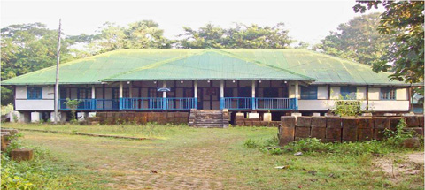

বৈচিত্র্যময় খাগড়াছড়ি

রামগড় উপজেলাটির প্রকৃত গোড়াপত্তন হয় ১৯২০ সালে একটি মহকুমা হিসাবে। ১৯৬৫ সালে পাক ভারত যুদ্ধের সময় রামগড় মহকুমা সদরের সকল অফিস খাগড়াছড়িতে স্থানান্তরিত হলে এর নাম হয় “Ramgarh Sub-division at Khagrachari”।
পরবর্তীতে ১৯৭৮-৭৯ সালে খাগড়াছড়িকে পৃথক মহকুমা ঘোষণা দিয়ে রামগড় মহকুমার সদর দপ্তর পুনরায় রামগড়ে ফিরিয়ে আনা হয়। অতঃপর ১৯৮৪ সালে খাগড়াছড়ি মহকুমা জেলায় রূপান্তরিত হলে রামগড় মহকুমা রামগড় উপজেলায় পরিণত হয়।
তখন থেকে রামগড় মহকুমা প্রশাসকের জন্য ইতিপূর্বে ফেনী নদীর তীর ঘেঁষে নির্মিত বাসভবনটি কালের সাক্ষী হয়ে বিদ্যমান আছে-যা পর্যটকদের এখনো আকর্ষণ করে।